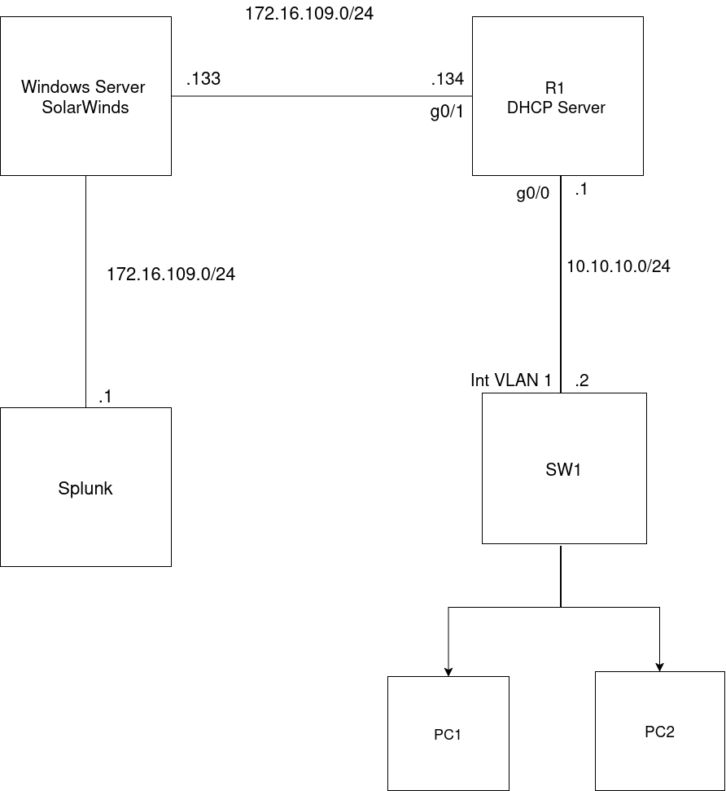

Project Overview
A hands-on network operations lab built to simulate real-world production incidents. Faults were systematically injected, then isolated, investigated, and remediated following standard operations discipline with empirical evidence captured at every stage.
Lab Topology

Investigated Incidents
Ordered by increasing complexity. The cases marked "Start Here" demonstrate deep multi-stage protocol analysis and root cause determination.
DHCP Service Failure
Access LAN clients failed to obtain DHCP addresses, resulting in 169.254.x.x APIPA addresses and loss of gateway reachability.
- Symptom: Client PC unable to lease IP address; DHCP Discover broadcasts unanswered.
- Root Cause: DHCP pool and
default-routerconfigured for 10.10.20.0/24 while LAN interface was 10.10.10.0/24. - Verification: Aligned DHCP pool to 10.10.10.0/24; verified full 4-way DORA exchange in Wireshark.
OSPF Adjacency Failure
Remote LAN became completely unreachable despite successful ICMP ping reachability across the transit link between R1 and R2.
- Symptom: Point-to-point IP connectivity operational, but OSPF neighbor table remained completely empty.
- Root Cause: Transit interfaces were assigned to mismatched OSPF areas (Area 0 vs. Area 1).
- Verification: Aligned transit link to Area 0; neighbor reached FULL state; LSDB synchronized.
ACL Blocks More Than Intended
A change intended to restrict Telnet unintentionally broke ping and HTTPS web access across the entire user enclave.
- Symptom: Inbound web and ICMP traffic failed immediately following security ACL deployment.
- Root Cause: Over-broad
deny ip any anyrule masked a secondary leftover TCP/443 deny ACE behind it. - Verification: Re-ordered rule chain with protocol-specific permits; verified TCP handshake and ICMP returns.
OSPF Stuck in EXSTART (MTU Mismatch)
Interface link was up and Hello packets exchanged normally, yet OSPF neighbor state machine stalled indefinitely in EXSTART.
- Symptom: Neighbors stuck in EXSTART state; Database Description (DBD) exchange never completed.
- Root Cause: MTU mismatch across the routed link (1500 vs. 1400 bytes), causing DBD packet drops.
- Verification: Corrected MTU to 1500 bytes (avoiding dangerous
ip ospf mtu-ignore); achieved FULL adjacency.
SNMP Monitoring Polling Failure
SolarWinds NPM marked core router R1 as down/unmanaged, even though SSH management and data-plane traffic functioned normally.
- Symptom: Monitoring portal generated false outage alerts; UDP/161 polling packets went unanswered.
- Root Cause: Community string typo (
NOC-R0with numeral zero vs.NOC-ROwith letter O). - Verification: Corrected SNMP community string; SolarWinds immediately restored polling and telemetry graphs.
DHCP Relay Agent Failure
Centralized remote DHCP server was completely healthy, yet branch LAN clients received no IP addresses upon booting.
- Symptom: DHCP Discovers flooded locally on LAN but no relayed unicast packets reached server.
- Root Cause:
ip helper-addresspointed to 10.20.20.11 instead of active server IP 10.20.20.1. - Verification: Corrected helper-address IP; verified DHCP relay forwarding and option fields in Wireshark.
NAT / PAT Translation Failure
Internal network communication worked normally, but all outbound internet sessions to public web destinations failed.
- Symptom: Clients unable to access public IPs;
show ip nat translationsreturned completely empty. - Root Cause: NAT access-list matched 10.10.20.0/30 instead of user LAN subnet 10.10.10.0/24.
- Verification: Updated NAT ACL to 10.10.10.0/24; validated active dynamic PAT translations in real time.
BGP Route Advertisement Failure
eBGP peering with upstream ISP was in Established state, but the ISP routing table lacked the enterprise LAN prefix.
- Symptom: BGP session up, but external return traffic dropped due to missing route on upstream ISP.
- Root Cause:
network 10.10.100.0statement did not match the actual 10.10.10.0/24 prefix in the Cisco RIB. - Verification: Corrected BGP network statement; verified via
show ip bgp neighbors advertised-routes.
HSRP Failover Failure
When primary edge router R1 was taken down for maintenance, standby router R2 failed to provide gateway connectivity for clients.
- Symptom: R2 transitioned to Active state, but LAN clients experienced total loss of default gateway reachability.
- Root Cause: Standby router R2 was configured with standby VIP 10.10.10.11 instead of 10.10.10.1.
- Verification: Aligned virtual IP to 10.10.10.1; tested live failover with R1 shut down; verified ARP resolution.
Proof of Technical Skills
Wireshark & PCAP Analysis
Deep-packet inspection used across every incident to isolate protocol negotiation states, analyze DORA handshakes, OSPF DBD flags, and verify traffic flows.
Cisco CLI Diagnostics
Structured show and debug command logs capturing broken and working states across routing tables, ACL hit counts, NAT translations, and neighbor tables.
Root Cause Analysis Methodology
Standardized RCA documentation connecting incident intake, symptoms, empirical investigation, root cause isolation, remediation, and verification.
Monitoring & Observability
SolarWinds NPM and Splunk telemetry correlation, including deliberate documentation of monitoring blind spots where tools failed to generate useful alerts.
Project Documentation & Repository
Standardized Incident Case Repository
Every incident in the repository follows a rigorous, production-grade directory structure containing complete technical artifacts:
- README.md: Full RCA report including Ticket intake, Expected State, Symptoms, Investigation, Root Cause, Resolution, and Lessons Learned.
- topology/: High-resolution diagram specific to the incident scenario.
- evidence/configs/: Exact before and after Cisco IOS device configuration files.
- evidence/pcaps/: Wireshark packet captures verifying broken vs. restored states.
- evidence/screenshots/: Timestamped CLI outputs, SolarWinds alerts, and Splunk logs.